AutoGenome在华为云上使用教程¶
AutoGenome已经部署医疗智能体平台和华为云ModelArts平台，并可以公开访问。这份教程将端到端演示如何在这两个平台上使用AutoGenome。
在ModelArts平台使用AutoGenome¶
目前AutoGenome在华为云ModelArts平台上可以公开访问。华为云注册用户可以使用免费的NoteBook服务来体验AutoGenome.(免费NoteBook提供1小时GPU使用时长，可以满足大部分基因组自动建模的任务。)
下面展示在ModelArts平台使用免费NoteBook服务完成AutoGenome的端到端训练和推理过程。
Step 3: 选择NoteBook的规格¶
在新的页面，填写NoteBook的名字，选择“Python2”，“GPU”；在“规格”选择“[Limited-time free] GPU:1*p100 CPU”， 然后点击“下一步”。
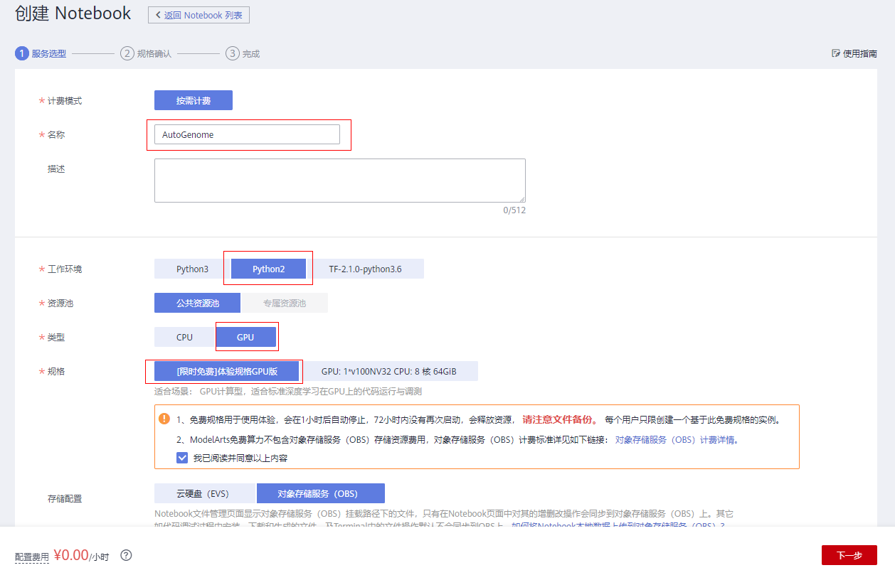
在接下来的页面中点击“提交”，创建NoteBook环境的过程。
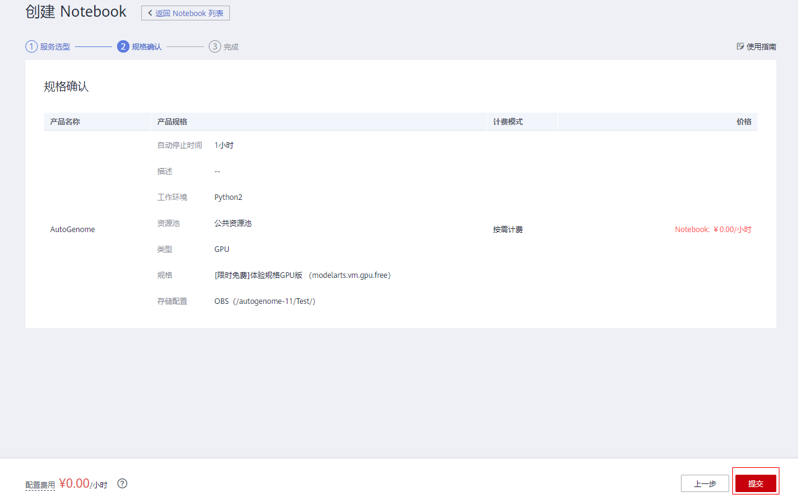
.点击“返回Notebook列表”.
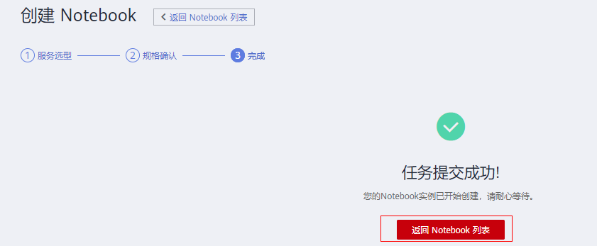
Step 4: 启动NoteBook环境¶
一般需要花费几秒钟的时间启动NoteBook环境。
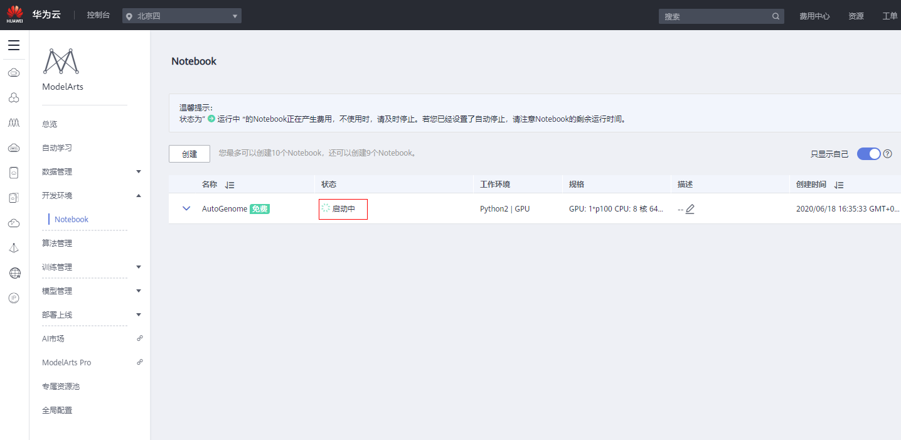
当Notebook状态为 “运行中”， 可以点击“打开”按钮启动Notebook服务。
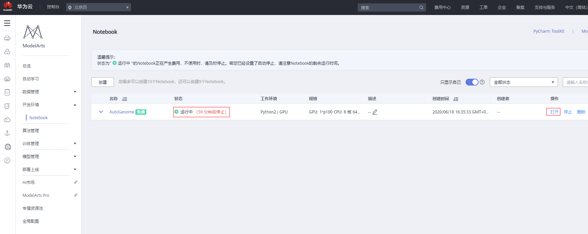
点击“Open JupyterLab”，将跳转到JupyterLab页面。

Step 5: 使用AutoGenome端到端进行AI建模¶
在JupyterLab, 在“ModeArts Examples”中选择AutoGenome notebook例子，点击“Create a copy”，就能端到端运行AutoGenome的例子。

Step 6: 上传自己的数据体验AutoGenome¶
使用JupyterLab，点击 “File Browser”菜单栏，使用“Upload”按钮上传自己的数据。如果数据大于100Mb,建议使用OBS上传 (https://support.huaweicloud.com/engineers-modelarts/modelarts_23_0105.html )。
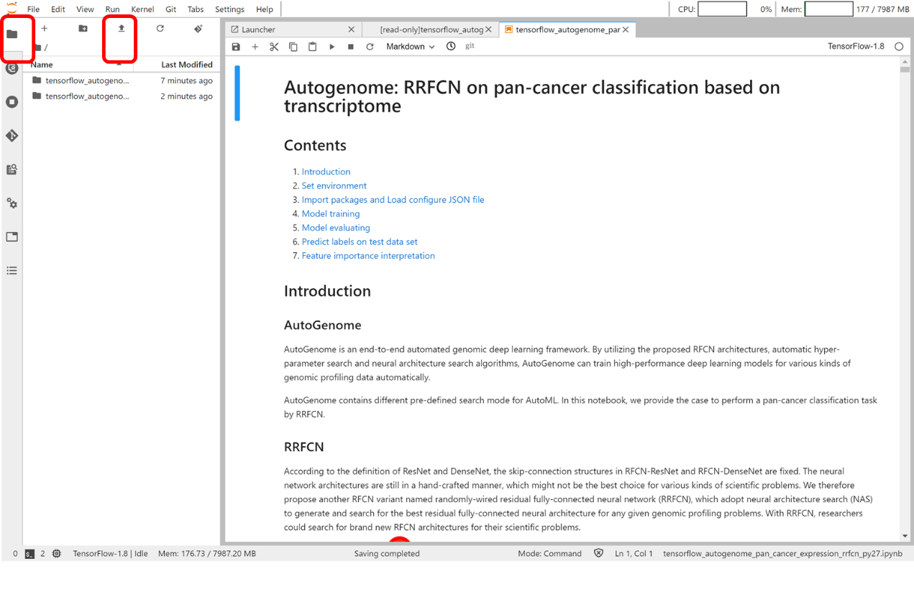
在医疗智能体平台使用AutoGenome¶
华为医疗智能体是集基因组学探索、临床研究和药物发现等领域于一身的AI平台。下面展示在医疗智能体平台体验AutoGenome的端到端流程。
Step 2: 创建Notebook开发环境¶
点击“开发环境” – “代码集” – “AutoGenome-Examples” – “创建实例” 进入到Notebook页面。
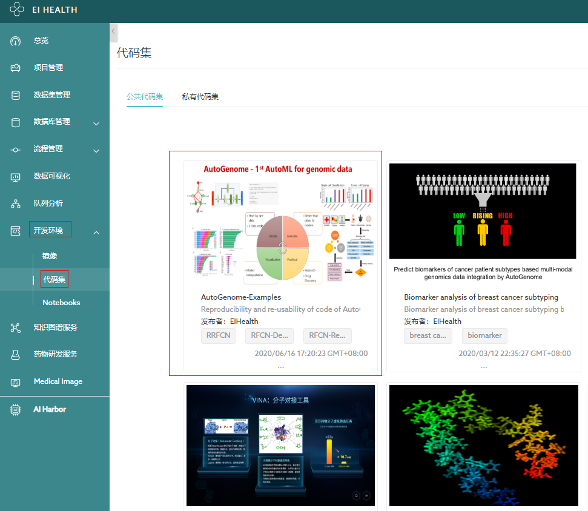
填写创建Notebook所需的参数，点击 “立即创建”
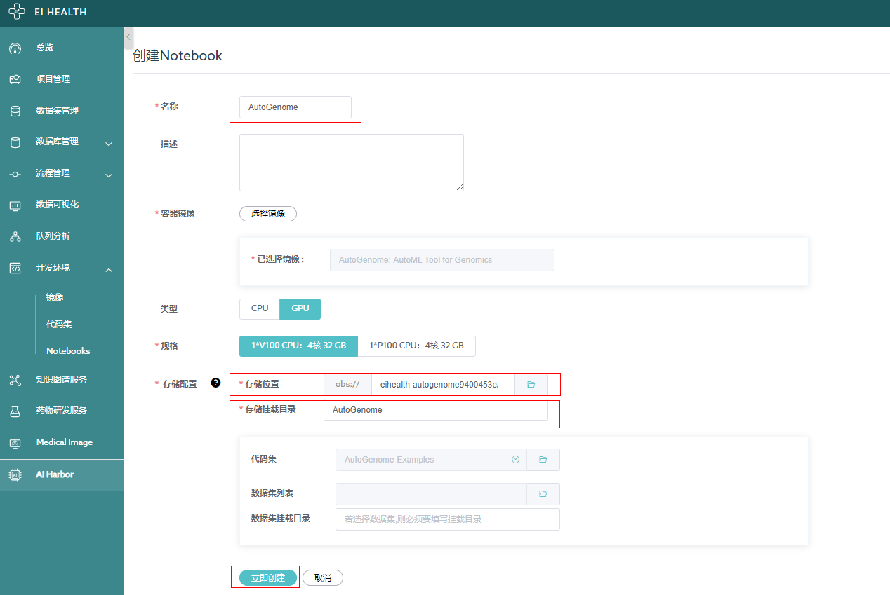
Notebook服务创建成功后，点击“打开” 进入Notebook页面。
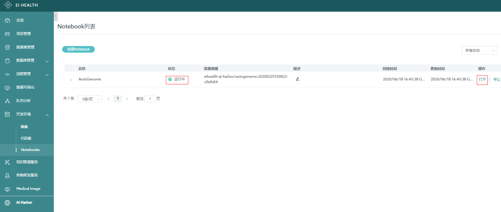
Step 3: 打开Notebook中AutoGenome案例¶
选择“AutoGenome_Example”。
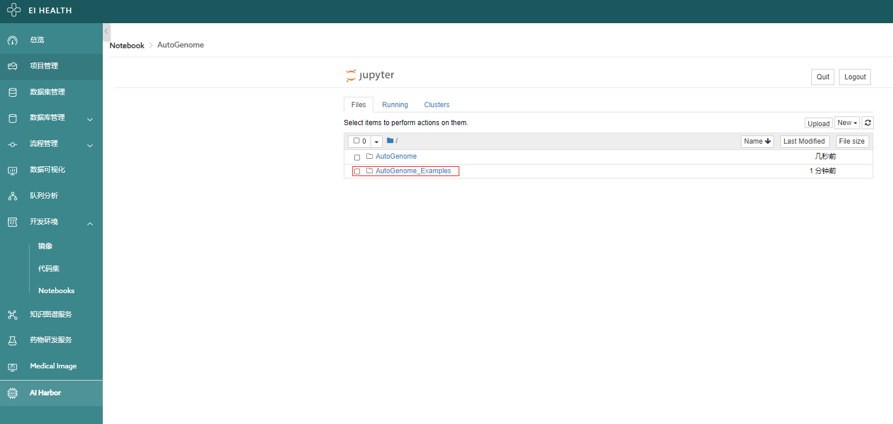
文件夹将包含若干个例子，选择并进入其中一个文件夹
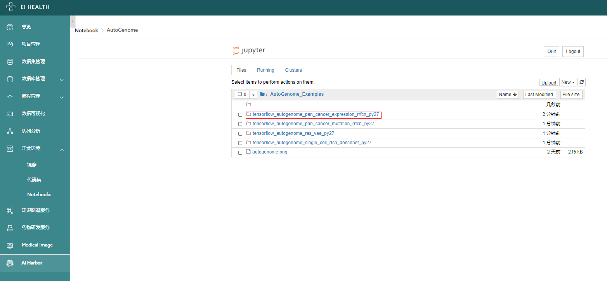
点击其中一个ipynb文件将打开AutoGenome的案例Notebook。
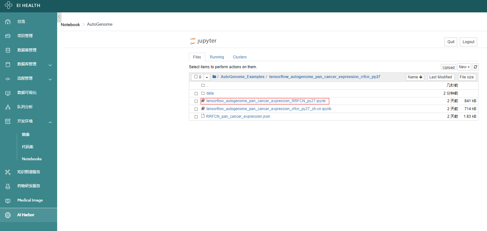
Step 4: 使用AutoGenome端到端进行AI建模¶
Notebook将包含端到端使用AutoGenome的代码，案例覆盖了监督学习和非监督学习。使用者可以使用Notebook案例复现AutoGenome文章的结果。
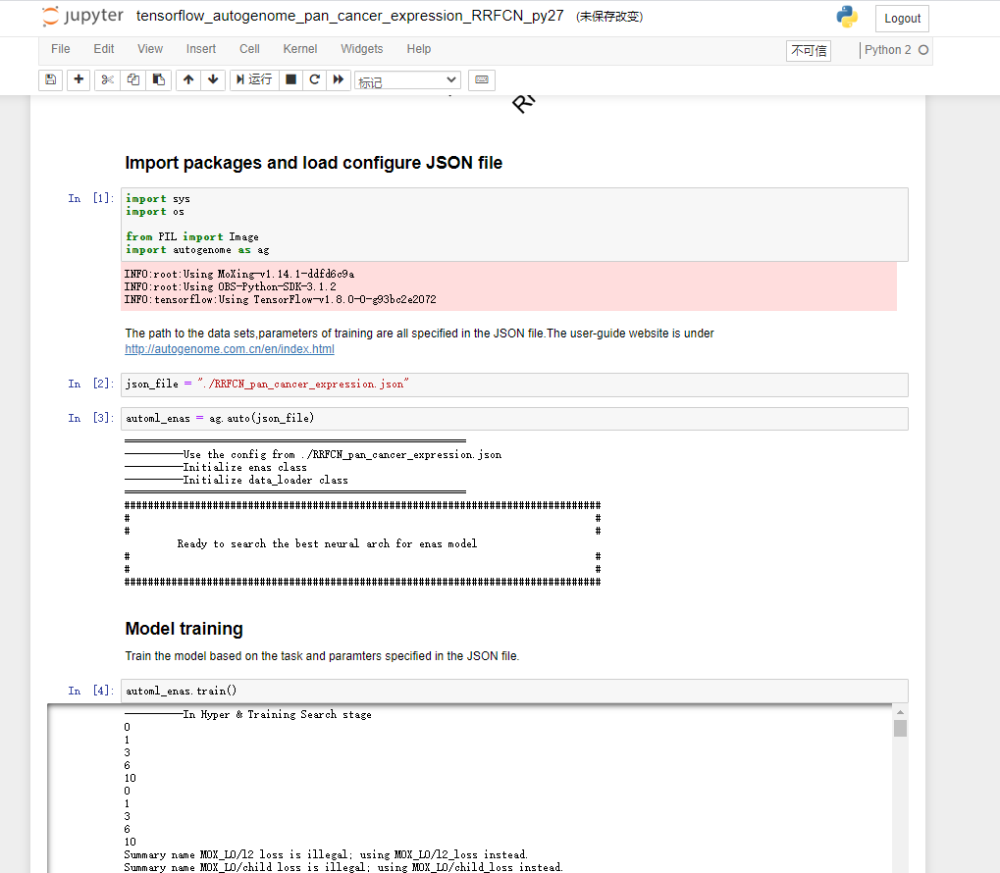
Step 5: 上传自己的数据体验AutoGenome¶
在工作目录中，点击“Upload”按钮。
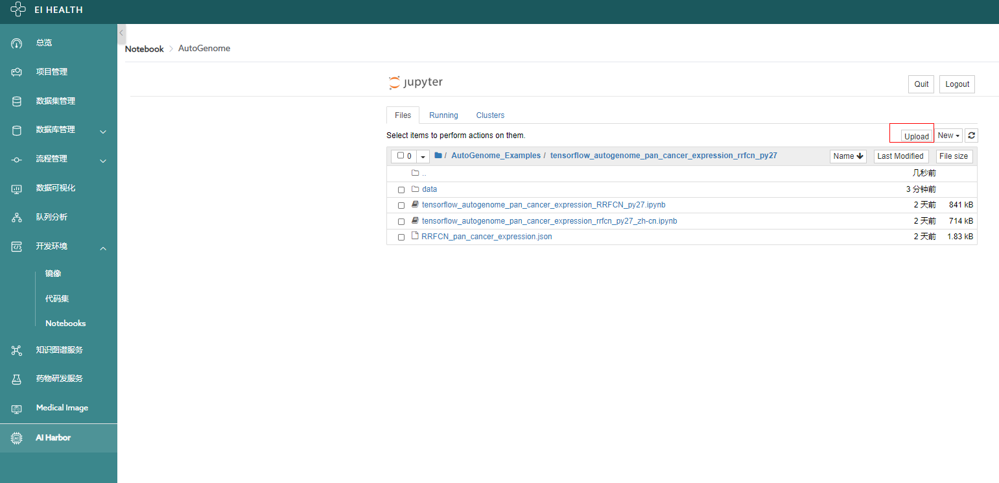
选择自己的文件后，点击“Upload”上传指定的文件，并且根据Notebook案例用自己的数据体验AutoGenome
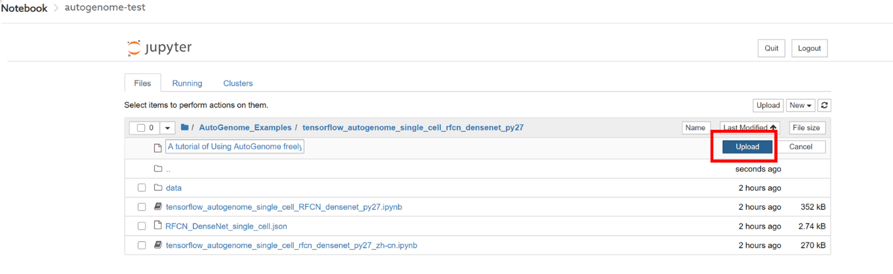